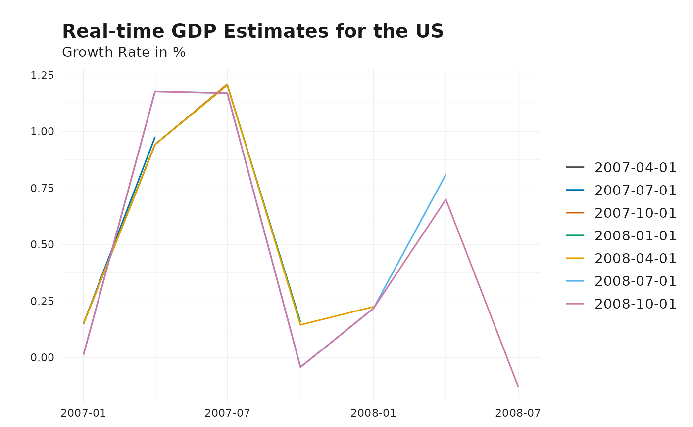
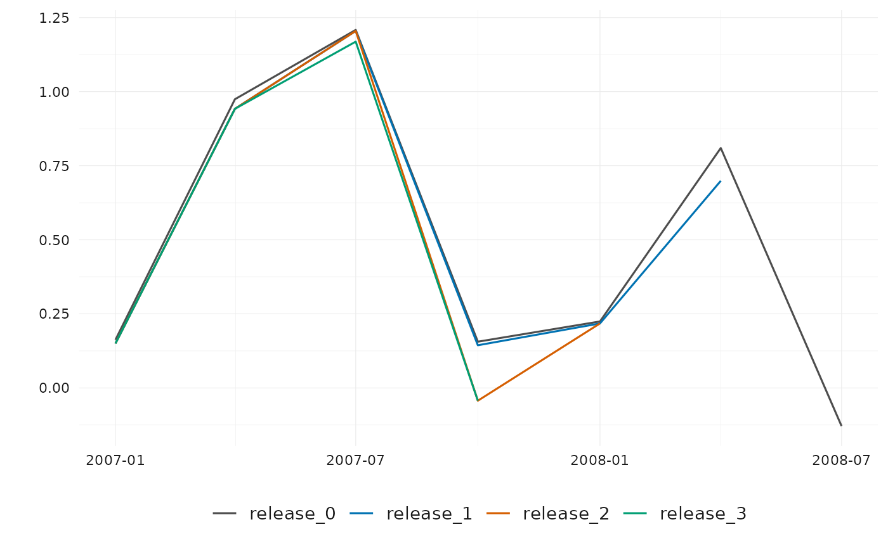
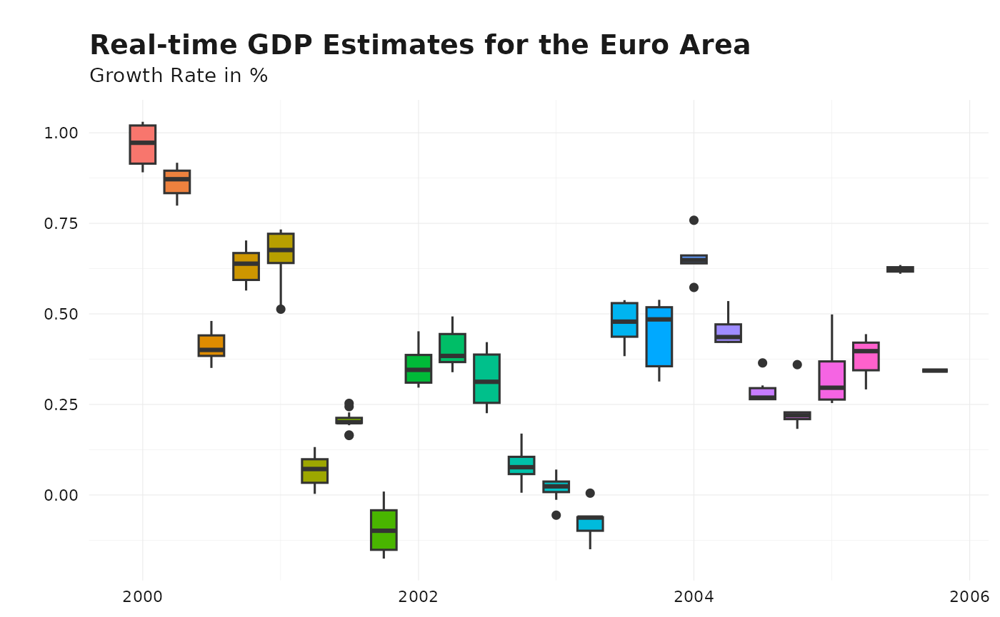
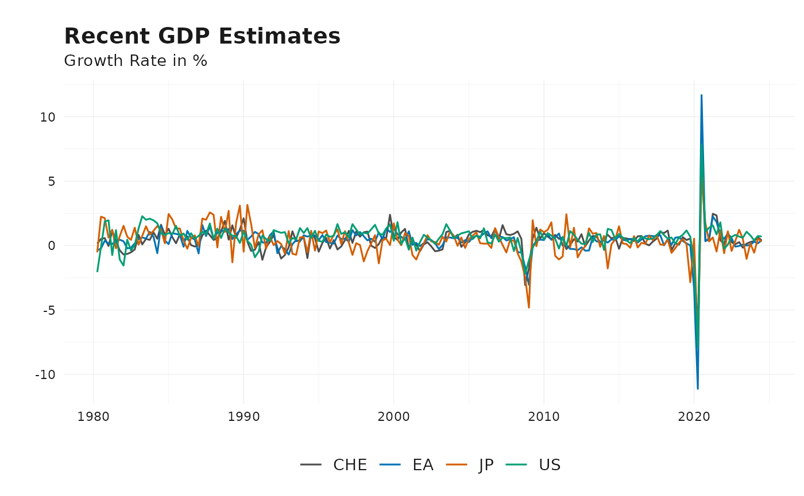

The reviser package provides tools to manipulate and
analyze vintages of time series data subject to revisions. This vignette
demonstrates how to get started and structure your data according to the
package’s conventions.
Package conventions
The most conventional way is to represent vintage data in a real-time data matrix, where each row represents a time period and each column represents successive releases of the data. This known as the wide format. The package supports data in wide format. and assumes that the data is organized in the following columns:
-
time, the time period - Publication dates in
'yyyy-mm-dd'format or release numbers asrelease_#
While wide format is practical for inspection, data manipulation is often easier in long (tidy) format, which consists of:
-
time, the time period -
pub_dateand/orrelease, the publication date or release number -
value, the reported value. -
id, an optional column to distinguish between different series
For illustration, the package provides a dataset in long
format, gdp. Below, we examine GDP growth rates
for the US and Euro Area during the 2007–2009 financial crisis.
# Example long-format US GDP data
data("gdp")
gdp_us_short <- gdp |>
dplyr::filter(id == "US") |>
ts_pc() |>
filter(
pub_date >= as.Date("2007-01-01"),
pub_date < as.Date("2009-01-01"),
time >= as.Date("2007-01-01"),
time < as.Date("2009-01-01")
)
# Example long-format EA GDP data
gdp_ea_short <- gdp |>
dplyr::filter(id == "EA") |>
ts_pc() |>
filter(
pub_date >= as.Date("2007-01-01"),
pub_date < as.Date("2009-01-01"),
time >= as.Date("2007-01-01"),
time < as.Date("2009-01-01")
)
head(gdp_ea_short)
#> # A tibble: 6 × 4
#> time pub_date value id
#> <date> <date> <dbl> <chr>
#> 1 2007-01-01 2007-04-01 0.603 EA
#> 2 2007-01-01 2007-07-01 0.707 EA
#> 3 2007-04-01 2007-07-01 0.349 EA
#> 4 2007-01-01 2007-10-01 0.780 EA
#> 5 2007-04-01 2007-10-01 0.310 EA
#> 6 2007-07-01 2007-10-01 0.714 EAConvert Long to Wide Format
To transform a dataset from long format to
wide format, use vintages_wide(). The
function requires columns time and value,
along with either pub_date or release. An
optional id column can be used to distinguish between
multiple series.
# Convert wide-format data to long format
wide_ea_short <- vintages_wide(gdp_ea_short)
head(wide_ea_short)
#> $EA
#> # Vintages data (publication date format):
#> # Format: wide
#> # Time periods: 7
#> # Vintages: 7
#> time `2007-04-01` `2007-07-01` `2007-10-01` `2008-01-01` `2008-04-01`
#> <date> <dbl> <dbl> <dbl> <dbl> <dbl>
#> 1 2007-01-01 0.603 0.707 0.780 0.789 0.745
#> 2 2007-04-01 NA 0.349 0.310 0.274 0.334
#> 3 2007-07-01 NA NA 0.714 0.750 0.721
#> 4 2007-10-01 NA NA NA 0.382 0.352
#> 5 2008-01-01 NA NA NA NA 0.800
#> 6 2008-04-01 NA NA NA NA NA
#> 7 2008-07-01 NA NA NA NA NA
#> # ℹ 2 more variables: `2008-07-01` <dbl>, `2008-10-01` <dbl>Convert Wide to Long Format
To revert to long format, use
vintages_long(). The function expects column names in
wide format to be valid dates or contain the string
"release".
# Convert back to long format
long_ea_short <- vintages_long(wide_ea_short)
long_ea_short
#> # Vintages data (publication date format):
#> # Format: long
#> # Time periods: 7
#> # Vintages: 7
#> # IDs: 1
#> time pub_date value id
#> <date> <chr> <dbl> <chr>
#> 1 2007-01-01 2007-04-01 0.603 EA
#> 2 2007-01-01 2007-07-01 0.707 EA
#> 3 2007-01-01 2007-10-01 0.780 EA
#> 4 2007-01-01 2008-01-01 0.789 EA
#> 5 2007-01-01 2008-04-01 0.745 EA
#> 6 2007-01-01 2008-07-01 0.745 EA
#> 7 2007-01-01 2008-10-01 0.728 EA
#> 8 2007-04-01 2007-07-01 0.349 EA
#> 9 2007-04-01 2007-10-01 0.310 EA
#> 10 2007-04-01 2008-01-01 0.274 EA
#> # ℹ 18 more rowsHandling Multiple Series with id
If an id column is present, vintages_wide()
returns a list with one dataset per unique
id. Conversely, vintages_long() maintains the
id column to distinguish between series.
gdp_short <- bind_rows(
gdp_ea_short |> mutate(id = "EA"),
gdp_us_short |> mutate(id = "US")
)
gdp_wide_short <- vintages_wide(gdp_short)
head(gdp_wide_short)
#> $EA
#> # Vintages data (publication date format):
#> # Format: wide
#> # Time periods: 7
#> # Vintages: 7
#> time `2007-04-01` `2007-07-01` `2007-10-01` `2008-01-01` `2008-04-01`
#> <date> <dbl> <dbl> <dbl> <dbl> <dbl>
#> 1 2007-01-01 0.603 0.707 0.780 0.789 0.745
#> 2 2007-04-01 NA 0.349 0.310 0.274 0.334
#> 3 2007-07-01 NA NA 0.714 0.750 0.721
#> 4 2007-10-01 NA NA NA 0.382 0.352
#> 5 2008-01-01 NA NA NA NA 0.800
#> 6 2008-04-01 NA NA NA NA NA
#> 7 2008-07-01 NA NA NA NA NA
#> # ℹ 2 more variables: `2008-07-01` <dbl>, `2008-10-01` <dbl>
#>
#> $US
#> # Vintages data (publication date format):
#> # Format: wide
#> # Time periods: 7
#> # Vintages: 7
#> time `2007-04-01` `2007-07-01` `2007-10-01` `2008-01-01` `2008-04-01`
#> <date> <dbl> <dbl> <dbl> <dbl> <dbl>
#> 1 2007-01-01 0.162 0.150 0.150 0.150 0.150
#> 2 2007-04-01 NA 0.974 0.942 0.942 0.942
#> 3 2007-07-01 NA NA 1.21 1.20 1.20
#> 4 2007-10-01 NA NA NA 0.156 0.144
#> 5 2008-01-01 NA NA NA NA 0.224
#> 6 2008-04-01 NA NA NA NA NA
#> 7 2008-07-01 NA NA NA NA NA
#> # ℹ 2 more variables: `2008-07-01` <dbl>, `2008-10-01` <dbl>Extracting Releases
Once data follows the package conventions, it can be analyzed
further. A common task is assessing the first release
of data, which corresponds to the diagonal of the real-time data matrix.
Use get_nth_release() to extract the nth
release. This function is 0-indexed, so the first
release corresponds to n = 0.
# Get the first release and check in wide format
gdp_releases <- get_nth_release(gdp_short, n = 0)
vintages_wide(gdp_releases)
#> Warning: Ignoring columns: release
#> $EA
#> # Vintages data (publication date format):
#> # Format: wide
#> # Time periods: 7
#> # Vintages: 7
#> time `2007-04-01` `2007-07-01` `2007-10-01` `2008-01-01` `2008-04-01`
#> <date> <dbl> <dbl> <dbl> <dbl> <dbl>
#> 1 2007-01-01 0.603 NA NA NA NA
#> 2 2007-04-01 NA 0.349 NA NA NA
#> 3 2007-07-01 NA NA 0.714 NA NA
#> 4 2007-10-01 NA NA NA 0.382 NA
#> 5 2008-01-01 NA NA NA NA 0.800
#> 6 2008-04-01 NA NA NA NA NA
#> 7 2008-07-01 NA NA NA NA NA
#> # ℹ 2 more variables: `2008-07-01` <dbl>, `2008-10-01` <dbl>
#>
#> $US
#> # Vintages data (publication date format):
#> # Format: wide
#> # Time periods: 7
#> # Vintages: 7
#> time `2007-04-01` `2007-07-01` `2007-10-01` `2008-01-01` `2008-04-01`
#> <date> <dbl> <dbl> <dbl> <dbl> <dbl>
#> 1 2007-01-01 0.162 NA NA NA NA
#> 2 2007-04-01 NA 0.974 NA NA NA
#> 3 2007-07-01 NA NA 1.21 NA NA
#> 4 2007-10-01 NA NA NA 0.156 NA
#> 5 2008-01-01 NA NA NA NA 0.224
#> 6 2008-04-01 NA NA NA NA NA
#> 7 2008-07-01 NA NA NA NA NA
#> # ℹ 2 more variables: `2008-07-01` <dbl>, `2008-10-01` <dbl>
# The function uses the pub_date column by default to define columns in wide
# format. Specifying the `names_from` argument allows to use the release column.
gdp_releases <- get_nth_release(gdp_short, n = 0:1)
vintages_wide(gdp_releases, names_from = "release")
#> Warning: Ignoring columns: pub_date
#> $EA
#> # Vintages data (release format):
#> # Format: wide
#> # Time periods: 7
#> # Releases: 2
#> time release_0 release_1
#> <date> <dbl> <dbl>
#> 1 2007-01-01 0.603 0.707
#> 2 2007-04-01 0.349 0.310
#> 3 2007-07-01 0.714 0.750
#> 4 2007-10-01 0.382 0.352
#> 5 2008-01-01 0.800 0.700
#> 6 2008-04-01 -0.200 -0.170
#> 7 2008-07-01 -0.194 NA
#>
#> $US
#> # Vintages data (release format):
#> # Format: wide
#> # Time periods: 7
#> # Releases: 2
#> time release_0 release_1
#> <date> <dbl> <dbl>
#> 1 2007-01-01 0.162 0.150
#> 2 2007-04-01 0.974 0.942
#> 3 2007-07-01 1.21 1.20
#> 4 2007-10-01 0.156 0.144
#> 5 2008-01-01 0.224 0.218
#> 6 2008-04-01 0.810 0.699
#> 7 2008-07-01 -0.129 NATo assess data accuracy, we need to define the final release. Since many statistical agencies continue revising data indefinitely, the latest release is often used as a benchmark.
Use get_nth_release(n = "latest") to extract the most
recent vintage.
# Get the latest release
gdp_final <- get_nth_release(gdp_short, n = "latest")
vintages_wide(gdp_final)
#> Warning: Ignoring columns: release
#> $EA
#> # Vintages data (publication date format):
#> # Format: wide
#> # Time periods: 7
#> # Vintages: 1
#> time `2008-10-01`
#> <date> <dbl>
#> 1 2007-01-01 0.728
#> 2 2007-04-01 0.477
#> 3 2007-07-01 0.555
#> 4 2007-10-01 0.354
#> 5 2008-01-01 0.661
#> 6 2008-04-01 -0.170
#> 7 2008-07-01 -0.194
#>
#> $US
#> # Vintages data (publication date format):
#> # Format: wide
#> # Time periods: 7
#> # Vintages: 1
#> time `2008-10-01`
#> <date> <dbl>
#> 1 2007-01-01 0.0123
#> 2 2007-04-01 1.18
#> 3 2007-07-01 1.17
#> 4 2007-10-01 -0.0430
#> 5 2008-01-01 0.218
#> 6 2008-04-01 0.699
#> 7 2008-07-01 -0.129Some agencies fix their data after a certain period
(e.g., Germany finalizes GDP data in August four years after the initial
release). The function get_fixed_release() extracts these
fixed releases.
gdp_ea_longer <- gdp |>
dplyr::filter(id == "EA") |>
ts_pc() |>
filter(
time >= as.Date("2000-01-01"),
time < as.Date("2006-01-01"),
pub_date >= as.Date("2000-01-01"),
pub_date <= as.Date("2006-01-01")
)
# Get the release from October four years after the initial release
gdp_releases <- get_fixed_release(
gdp_ea_longer,
years = 4,
month = "October"
)
gdp_releases
#> # Vintages data (publication date format):
#> # Format: long
#> # Time periods: 8
#> # Vintages: 2
#> # IDs: 1
#> time pub_date value id
#> <date> <date> <dbl> <chr>
#> 1 2000-01-01 2004-10-01 0.905 EA
#> 2 2000-04-01 2004-10-01 0.917 EA
#> 3 2000-07-01 2004-10-01 0.387 EA
#> 4 2000-10-01 2004-10-01 0.585 EA
#> 5 2001-01-01 2005-10-01 0.723 EA
#> 6 2001-04-01 2005-10-01 0.131 EA
#> 7 2001-07-01 2005-10-01 0.199 EA
#> 8 2001-10-01 2005-10-01 0.00809 EAVisualizing Vintage Data
The reviser package provides simple and flexible tools
for visualizing real-time vintages. The primary function for this is
plot_vintages(), which supports multiple plot types,
including line plots, scatter plots, bar plots, and boxplots. It returns
a ggplot2 object, allowing for further customization with
the ggplot2 package. This is a simple function allowing to
visualize real-time data in a few lines of code. However, it is only
possible to plot the data along one dimension (either
pub_date, release or id).
To use plot_vintages(), provide a data frame
containing:
- A
timecolumn (representing the observation period), - A
valuecolumn (containing the reported data), - A column indicating the publication date (
pub_date) or release number (release), which determines the dimension along which the data is visualized.
For example, to visualize how GDP estimates evolved over time, you can create a line plot comparing different vintages:
# Line plot showing GDP vintages over the publication date dimension
plot_vintages(
gdp_us_short,
title = "Real-time GDP Estimates for the US",
subtitle = "Growth Rate in %"
)
# Line plot showing GDP vintages over the release dimension
gdp_releases <- get_nth_release(gdp_us_short, n = 0:3)
plot_vintages(gdp_releases, dim_col = "release")
By default, if dim_col (the dimension along which
vintages are plotted) contains more than 30 unique values, only the most
recent 30 are displayed to maintain readability.
# Line plot showing GDP vintages over the publication date dimension
plot_vintages(
gdp_ea_longer,
type = "boxplot",
title = "Real-time GDP Estimates for the Euro Area",
subtitle = "Growth Rate in %"
)
# Line plot showing GDP vintages over id dimension
plot_vintages(
gdp |>
ts_pc() |>
get_latest_release() |>
na.omit(),
dim_col = "id",
title = "Recent GDP Estimates",
subtitle = "Growth Rate in %"
)
For further customization, you can apply custom themes and color scales using:
These functions ensure a consistent visual style tailored for vintage data analysis.
Analyzing Data Revisions and Releases
After defining the final release, we can analyze revisions and releases in multiple ways:
- Calculate revisions:
get_revisions(). See vignette Understanding Data Revisions for more details. - Analyze the revisions:
get_revision_analysis(). See vignette Revision Patterns and Statistics for more details. - Identify the first efficient release:
get_first_efficient_release(). See vignette Efficient Release Identification for more details. - Nowcast future revisions:
kk_nowcast()andjvn_nowcast(). See vignettes Nowcasting revisions using the generalized Kishor-Koenig family and Nowcasting revisions using the Jacobs-Van Norden model for more details.